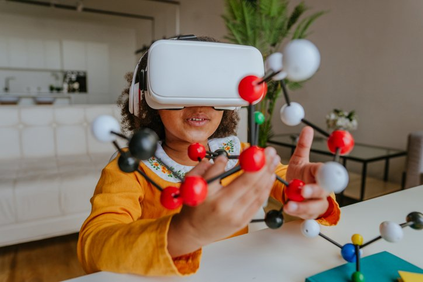
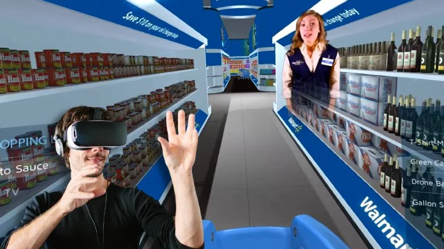

Artículo 1: Realidad virtual y aumentada en educación
June 17, 2022

La realidad virtual y la realidad aumentada son grandes recursos educativos, pero no son exactamente los mismo.
Históricamente, la tecnología ha sido una de las herramientas fundamentales para el avance de la educación y la mejora del aprendizaje, especialmente estos últimos dos años en los que desarrolló un rol crítico para habilitar la educación a distancia. En artículos anteriores hemos hablado sobre estos dos temas, realidad aumentada y realidad virtual, así como sus usos en educación.
En 2021 presentamos a la profesora Mariela Urzúa Reyes, que nos acompañó para explicar las aplicaciones de la realidad aumentada para enseñar química en una edición anterior de nuestros webinars. Este año, la profesora Urzúa regresa para el webinar titulado: Aplica Realidad Virtual de manera sencilla en tus clases de Química, que se llevará a cabo este martes 21 de junio a las 12:00 horas (Ciudad de México).
En esta nueva edición, la profesora Urzúa comentará acerca de otro proyecto de su autoría, pero con una tecnología diferente: realidad virtual. ¿Cuál es la diferencia entre esta y la aumentada? Para entender mejor lo que se conversará en esta transmisión, procedemos a explicar estas distinciones.
Realidad aumentada vs. Realidad virtual
Si bien ambos términos se refieren a la incorporación de elementos tecnológicos a la experiencia humana, sus implicaciones son muy distintas. Por un lado, la realidad aumentada, usa dispositivos para sumar aspectos digitales a un entorno físico, como en el juego Pokemon Go.
La realidad virtual, por otro lado, genera una experiencia de inmersión total a través del uso de dispositivos wearables (tecnología vestible) como visores o cascos de realidad virtual. Funciona creando un entorno simulado en el que el usuario se sumerge y percibe como cercano a la realidad. Dicho de forma simple, la realidad aumentada parte del mundo real y solo agrega elementos digitales a este, mientras que la virtual sumerge al usuario y crea una realidad de cero, ambas aproximaciones pueden aportar grandes beneficios al esfuerzo educativo.
Tecnologías didácticas y Química
El trabajo anterior de la profesora Urzúa en el rubro de las tecnologías educativas involucró un proyecto de realidad aumentada para la enseñanza de la Química con resultados muy positivos para sus estudiantes. En colaboración con su hijo, Jesús Alejandro Gómez Urzúa, de 15 años, desarrolló una app para que sus estudiantes pudieran visualizar el proceso de hibridación de carbono, la forma que toman los orbitales híbridos y la manera en que se hacen enlaces sencillos dobles y triples de hidrocarburos. De acuerdo con la docente, el 95 % de los estudiantes reportaron que la aplicación les ayudó a mejorar su aprendizaje y nivel de comprensión.
“La materia de Química no es tan popular, son muy pocos los interesados en esta asignatura dada la complejidad de los conceptos básicos para comprender la estructura de la materia. Sin embargo, con realidad aumentada podemos motivar a los estudiantes a conocer más sobre esta materia y adentrarse a mundos desconocidos”, comentó la profesora sobre las prestaciones de la tecnología para facilitar la educación en un artículo Edu bits sobre su penúltimo proyecto.
Artículo 2: Walmart implementará Realidad Aumentada en su app: así mejorarán la experiencia del cliente
June 28, 2022

El gigante del retail implementa nuevas funciones de realidad aumentada en su aplicación buscando facilitar las compras de sus clientes
Walmart trabaja en la prueba de nuevas funciones de realidad aumentada en su aplicación. El anuncio fue confirmado por Brock McKeel, vicepresidente senior de experiencia del sitio en Walmart eCommerce, y Cheryl Ainoa, vicepresidenta senior de nuevos negocios y tecnología emergente en Walmart Global Tech, a través del sitio web de la empresa.
"Creemos que la tienda más cercana a nuestros clientes está en su bolsillo, y estamos enfocados en hacer que esa experiencia siempre activa sea lo más fácil, atractiva y personalizada posible", resaltaron los directivos al presentar las nuevas posibilidades de las funciones de Realidad Aumentada.
La primera función estará disponible para todos los clientes a principios de julio en la aplicación iOS de Walmart y permitirá ver muebles y elementos de decoración del hogar en sus espacios con sus teléfonos.
Walmart trabaja en el desarrollo de más herramientas de realidad aumentada
Esta experiencia estará inicialmente disponible para 300 muebles y artículos de decoración del hogar, con planes de expandirse a artículos populares en los próximos meses.
Para acceder a esta novedad en la aplicación Walmart, los usuarios deberán usar la opción "Ver en tu espacio" en los elementos habilitados para realidad aumentada, los cuales tendrán un cartel de AR.
Luego deberán usar su cámara para ver el artículo en su propio hogar, y podrán alternar las dimensiones del artículo para verificar si el artículo cabe en su casa y tomar una foto para más "ayudarlos a sentirse seguros al comprar con nosotros". "Ver en tu espacio" estará disponible en iOS, con planes para implementarse en Android y la web móvil.
"Después de probar exhaustivamente esta función con nuestros propios clientes, recibimos comentarios abrumadoramente positivos, lo que ayudó a garantizar que la experiencia fuera lo más fluida y fácil de usar posible", remarcaron los ejecutivos.
Y completaron: "Las imágenes eran muy realistas y no colocaron un artículo en un lugar extraño como con otras apps. Ni siquiera probamos esta función en otras aplicaciones por este motivo, pero estamos muy impresionados. Realmente nos encantó esta experiencia".
Otras funciones
La función incluye retroalimentación háptica, que permite a los clientes sentir vibraciones mientras maniobran modelos 3D alrededor de sus hogares y evita que arrastren elementos más allá de los límites de su habitación."Esto agrega un nivel convincente de realismo a la experiencia. Por ejemplo, los clientes con movilidad limitada pueden colocar un artículo dentro de una habitación y moverlo con controles de gestos. Para los clientes ciegos o con escasa visión, la experiencia proporciona instrucciones y descripciones basadas en voz", dijeron McKeel y Ainoa.
Además, señalaron que la Realidad Aumentada también está permitiendo nuevas experiencias en sus tiendas, ayudando a sus clientes a llevar los productos a los estantes rápidamente."Ahora Walmart Global Tech está desarrollando una nueva función AR en la tienda que cambia la forma en que verá la información clave del producto", dijeron McKeel y Ainoa.
"Imaginate que sos un cliente que no consume gluten. Usando la herramienta AR en la tienda, podrás usar tu teléfono para leer los ingredientes de los alimentos de forma rápida e identificar fácilmente los productos sin gluten. Los cupones son otro caso de uso futuro. Por ejemplo, los clientes también podrán escanear los estantes de las tiendas para ver qué artículos están en liquidación o parte de un programa de recompensas", dijeron McKeel y Ainoa.
"Todas estas funciones impulsadas por AR nos ayudan a ofrecer experiencias rápidas, atractivas y personalizadas que simplifican las compras y subrayan nuestro compromiso de utilizar la tecnología para ahorrar tiempo y dinero a los clientes", aseguraron los ejecutivos de Walmart en un artículo del sitio drugstorenews.com.
Artículo 3: Ciencia básica al servicio de la tecnología del futuro
June 29, 2022
Computación. Juan Luis Aragón, de la Fundación Séneca, investiga en Estados Unidos cómo procesar y analizar datos masivos de una forma eficiente
En plena era del Big Data, los sistemas de computación de alto rendimiento (HPC por sus siglas en inglés), capaces de procesar datos y realizar cálculos complejos a velocidades muy altas, se emplean tanto para ejecutar aplicaciones de cómputo tradicional, aquellos en los que la información se almacena en el disco duro del ordenador o en un servidor; así como para la ejecución de aplicaciones emergentes que procesan grandes conjuntos de datos. Para ello, a nivel de ciencias de la computación, se necesitan estructuras de datos particulares, como por ejemplo los grafos, que permiten una representación más natural de aquellos datos que no siguen patrones regulares. Algunos ejemplos de aplicaciones que utilizan grafos son las redes sociales (que manejan miles de millones de nodos que representan a millones de usuarios y las continuas interacciones entre ellos), los sistemas de recomendación, el modelado de moléculas de proteínas, los asistentes de condución que emplean mapas de carreteras, o el diseño de circuitos digitales.
Es más, actualmente se ha producido una explosión del tamaño de los datos a gestionar. Sin embargo, las aplicaciones emergentes que trabajan con grafos están plagadas de accesos irregulares a los datos, lo que se traduce en que hacen un uso extremadamente ineficiente del sistema de memoria de los computadores modernos, que ven reducido seriamente su rendimiento cuando ejecutan dichas aplicaciones.
Por tanto, ha surgido la necesidad de ser capaces de procesar y analizar estos datos masivos de una forma eficiente y numerosas empresas tecnológicas, de bolsa, de la banca y comercio electrónico se están adentrando en el campo del análisis masivo de los datos (graphanalytics).
En la Universidad de Princeton (New Jersey, EE UU), se encuentra Juan Luis Aragón, profesor de la Universidad de Murcia, realizando una estancia investigadora financiada por la Fundación Séneca, en el marco del Programa Jiménez de la Espada de Movilidad, Colaboración Internacional e Intercambio de la Región de Murcia. Allí está trabajando en el diseño de un sistema de memoria de alto rendimiento para las aplicaciones emergentes orientadas al análisis masivo de datos, proporcionando una solución para mitigar uno de los principales cuellos de botella de los sistemas de computación modernos, que no es otro que el acceso eficiente a los datos almacenados en la memoria de los computadores. Como resultado, dice, «se permitirá un acceso a la memoria de baja latencia (esto es, sumamente rápido), con un ancho de banda reducido, consiguiendo además mejorar el rendimiento y la eficiencia energética de los sistemas de computación, que serán capaces de ejecutar de una forma más eficiente las aplicaciones orientadas al análisis masivo de datos».
Propuesta rompedora
A día de hoy su equipo ya tiene algunos resultados preliminares que caracterizan el comportamiento ineficiente del sistema de memoria virtual y cómo los Sistemas Operativos, incluso usando un mecanismo conocido como Páginas Trasparentes Grandes (del inglés, Transparent Huge Pages) son incapaces de funcionar eficientemente cuando hay escasez de memoria. «Nuestra propuesta para mitigar este problema es rompedora y se basa en un mecanismo de promoción selectivo que transforme las páginas básicas (o minipáginas) en páginas grandes pero basado en la frecuencia de acceso a estas, en lugar de basarse en una propiedad tan sencilla como que sean consecutivas», explica. La memoria principal de los ordenadores modernos se divide en áreas denominadas páginas, inicialmente de tamaño pequeño pero que pueden crecer para mejorar el rendimiento. El problema es que estas páginas, ya sean pequeñas o grandes, son zonas de memoria consecutivas. Y las aplicaciones que usan grafos, como aceden a memoria de una forma extremadamente irregular (es decir, a zonas no consecutivas), el uso de páginas grandes suele acabar empeorando el problema.
Esto se debe a que cada página almacena unos pocos nodos del grafo a los que no se va a acceder en el corto plazo y los accesos acaban haciéndose a páginas diferentes cada vez. Este comportamiento tan irregular acaba colapsando la memoria física del sistema, de forma que el proceso de traducción de virtual se convierte en uno de los principales cuellos de botella del mismo. «Nuestra propuesta consiste en detectar las minipáginas más populares, es decir, aquellas que contienen nodos con un gran número de vecinos, con el fin de crear páginas grandes no consecutivas y mayoritariamente conformadas por minipáginas populares», indica. Aragón asegura que «con este mecanismo de promoción selectivo de las páginas se evita la fragmentación interna, y esto se traduce en una mejora significativa del rendimiento. Se ha redactado un artículo de investigación con estos resultados que está actualmente en proceso de revisión».
Esta investigación se enmarca en lo que la ciencia se denomina investigación básica, en este caso en el campo de la arquitectura de computadores, pero que permitirá tener un gran impacto en múltiples campos que abarcan desde las ciencias de la computación al resto de ingenierías donde cada vez se trabaja con conjuntos de datos más grandes y complejos (cuya representación natural son los grafos) y que han de ser procesados de la forma más rápida para tener los resultados en el menor tiempo posible (o incluso en tiempo real).
Aragón lleva varios años colaborando de forma muy activa con la Universidad de Princeton, una de las más prestigiosas a nivel mundial, la cual se encuentra en las primeras posiciones en todos los rankings académicos. Esta investigación le ha permitido realizar varias estancias de investigación en dicha institución para poder colaborar de forma más cercana con el grupo de Margaret Martonosi, líder en el campo de la Arquitectura de Computadores, como lo demuestra el haber recibido recientemente el premio ACM-IEEE Eckert-Mauchly, considerado como el premio Nobel en el campo de la arquitectura de computadores. Además, ha podido participar en el proyecto Decades, con una duración de cinco años y financiado con casi seis millones de dólares por la agencia Darpa del Departamento de Defensa de EE UU, con el fin de desarrollar un chip capaz de acelerar aplicaciones para la era del Big Data. Advierte que «ha sido un trabajo intenso» pero hace unas semanas se recibieron los primeros prototipos de chips fabricados y que ahora están en fase de pruebas. Los resultados preliminares se presentaron en el congreso ISCA, el más importante a nivel mundial en arquitectura de computadores, cuya 49 edición se celebró hace unos días en Nueva York.